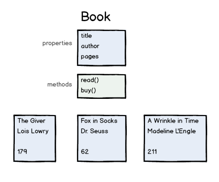

JavaScript
Объектно-ориентированное программирование
bi0morph.github.io/teaching-materials/jsoo/
оригинал
Объектно-ориентированное программирование
- Объекты имеют свойства и методы
- Может быть много "экземпляров" объектов
- Экземпляры класса Book
Определение объектов в JS
// Функция конструктор
function Book(title, author, numPages) {
// свойства объекта
this.title = title;
this.author = author;
this.numPages = numPages;
this.currentPage = 0;
}
// методы объектв
Book.prototype.read = function() {
this.currentPage = this.numPages;
console.log("You read " + this.numPages + " pages!");
}
// Создание экземпляра объекта
var book = new Book("Robot Dreams", "Isaac Asimov", 320);
book.read();
Время выполнения упражнения!
Объектно-ориентированное программирование

- Объекты могут наследовать свойства и методы других объектов
- Объекты могут реализовывать родительские методы по своему
Наследование объектов в JS
// функция конструктор
function PaperBack(title, author, numPages, cover) {
Book.call(this, title, author, numPages);
this.cover = cover;
}
// Наследование от объекта Book.prototype, или наследование от класса Book
PaperBack.prototype = Object.create(Book.prototype);
// Новый класс PaperBack
PaperBack.prototype.burn = function() {
console.log("Omg, you burnt all " + this.numPages + " pages");
this.numPages = 0;
}
// Создание нового экземпляра объекта PaperBack
var paperback = new PaperBack("1984", "George Orwell", 250, "cover.jpg");
paperback.read();
paperback.burn();
Время выполнения упражнения!
Более четкие конструкторы
function Book(title, author, numPages) {
this.title = title;
this.author = author;
this.numPages = numPages;
this.currentPage = 0;
}
var book = new Book("Robot Dreams", "Isaac Asimov", 320);
в сравнении с:
function Book(config) {
this.title = config.title;
this.author = config.author;
this.numPages = config.numPages;
this.currentPage = 0;
}
var book = new Book({
title: "Robot Dreams",
author: "Isaac Asimov",
numPages: 320});
Необязательные аргументы
function Book(config) {
this.title = config.title;
this.author = config.author;
this.numPages = config.numPages;
this.currentPage = 0;
}
var book = new Book({
title: "Robot Dreams",
author: "Isaac Asimov",
numPages: 320);
в сравнении с:
function Book(config) {
config = config || {};
this.title = config.title || "Untitled";
this.author = config.author || "Unknown";
this.numPages = config.numPages || 100;
this.currentPage = 0;
}
var book = new Book({
title: "Robot Dreams",
numPages: 320);
Время выполнения упражнения!
JS Объектно-ориентированное программирование после ES2015
// функция конструктор
class PaperBack extends Book {
constructor(title, author, numPages, cover) {
super(this, title, author, numPages);
this.cover = cover;
}
burn() {
console.log("Omg, you burnt all " + this.numPages + " pages");
this.numPages = 0;
}
}
// Создание нового экземпляра объекта PaperBack
var paperback = new PaperBack("1984", "George Orwell", 250, "cover.jpg");
paperback.read();
paperback.burn();